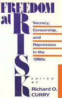

<body bgcolor="#FFFFFF" text="#000000" link="#0000FF" vlink="#CC0000" alink="#CC0000"><center><hr width="350" size="1" align="center" noshade>Indictment of the Reagan Administration's belief about the requirements of national security<hr width="350" size="1" align="center" noshade><p><a href="https://cdcshoppingcart.uchicago.edu/Cart/ChicagoBook.aspx?ISBN=9780877225430&&PRESS=temple" target="_top">Buy this book!</a> | <a href="https://cdcshoppingcart.uchicago.edu/Cart/Cart.aspx?PRESS=temple" target="_top">View Cart</a> | <a href="https://cdcshoppingcart.uchicago.edu/Cart/Cart.aspx?PRESS=temple" target="_top">Check Out</a></p><p></p></center><!--none//--><h1>Freedom at Risk</h1>
<H2>Secrecy, Censorship, and Repression in the 1980s</H2>
<h3>edited by Richard O. Curry</h3>
<P>cloth 0-87722-543-5 $46.50, Sep 88, <FONT COLOR=#990033>Out of Stock Unavailable</FONT>
<br>paper 0-87722-660-1 $20.95, Jul 89, <FONT COLOR=#990033>Out of Stock Unavailable</FONT>
<BR> 448 pp
</P><BLOCKQUOTE><I>"A credible and alarming exposé of the Reagan administration’s disregard for First Amendment values and its aggressive attempts to institutionalize government secrecy, censorship and repression."</I>
<br>&#151<b><I>Publishers Weekly</I></b><I></I></BLOCKQUOTE>
<p>The Reagan Administration’s belief that "individual liberties are secondary to the requirements of national security" has led to a massive assault on civil liberties that is unparalleled in American history in its scope and intensity. This indictment of the Reagan Administration examines how exaggerated fears of Soviet capabilities, hostility to the concept of an open society, as well as a search for "total security" and a revolution in constitutional law have not only justified but have institutionalized an attack on the Bill of Rights in ways that will be difficult if not impossible to eradicate.
<p>While citing historical precedent for counter-subversive crusades, the contributors to <I>Freedom at Risk</I> discuss an alarming number of incidents and ways in which the Reagan Administration has made radical departures with the past in its zealous enforcement of secrecy, censorship, and repression, especially with regards to Central American policies.
<BR>&nbsp;<h2>Reviews</h2>
<p><I>"The depressing dope about disinformation, domestic surveillance, drug testing, and other federal foul play. Splendidly comprehensive."</I>
<br>&#151<b><I>Village Voice Literary Supplement</I></b>
<p><I>"Its message could hardly be more timely. It should be prized by scholars and experts: it also cries out for the readership of all Americans concerned with the damage inflicted on the process of opinion formation, and with the preservation of Constitutional freedoms endangered by the misguided Reaganite obsession with 'national security' as the all-purpose justification for trampling on rights recognized after long years of struggle."</I>
<br>&#151<b>Frank J. Donner</b>, author of <I>The Un-Americans and Age of Surveillance</I>
<p><I>"More clearly and precisely than any book I am aware of, this volume of essays explains just how the Reagan Administration, since 1981, has clipped, gouged, and plain ignored the Bill of Rights. Even people who are generally aware of what has been happening will be stunned by the frightening range of constitutional violations. If our next Resident would be faithful to his oath of office, he should read and reread this book."</I>
<br>&#151<b>Prof. Norman Dorsen</b>, President, American Civil Liberties Union
<p><I>"This is a wide-ranging treatment, both hard hitting and reasoned, of secrecy, censorship, and repression at the hands of the Reagan operatives who, as self-styled conservatives, should know better A stellar roster of experts dramatizes the vulnerabilities of the American creed of freedom to attacks on many fronts. An especially timely book as we approach the Bill of Rights bicentennial."</I>
<br>&#151<b>James MacGregor Burns</b>, Williams College
<BR>&nbsp;<H2>About the Author(s)</H2>
<P><b>Richard O. Curry</b> is Professor of American History at the University of Connecticut.</P>
<P>Contributors: Thomas G. Paterson, Stephen H. Unger, Judith Schenck Koffler, Walter Schneir, Miriam Schneir, Richard Delgado, John Shattuck, Donna A. Demac, Diana M. T . K. Autin, Geoffrey R. Stone, William Preston, Jr., Harry G. Levine, Craig Reinarman, Louis Wolf, Martin Garbus, Mark Schapiro, Jamie Kalven, Michael McConnell, Athan Theoharis, Michael Ratner, Margaret Randall, Thomas I . Emerson, Steven Burkholder, Ellen Ray, Nat Hentoff, Eleanor Stein, Janet Raloff, Renny Golden, and the editor.</P>
<BR><H2>Subject Categories</H2>
<p><A HREF="/tempress/american.html" TARGET="_top">American Studies</a>
<BR><A HREF="/tempress/political.html" TARGET="_top">Political Science and Public Policy</a>
</p>
<p align="center"><a href="https://cdcshoppingcart.uchicago.edu/Cart/ChicagoBook.aspx?ISBN=9780877225430&&PRESS=temple" target="_top">Buy this book!</a> | <a href="https://cdcshoppingcart.uchicago.edu/Cart/Cart.aspx?PRESS=temple" target="_top">View Cart</a> | <a href="https://cdcshoppingcart.uchicago.edu/Cart/Cart.aspx?PRESS=temple" target="_top">Check Out</a></p><p><font face="Arial" size="1"><a href="copyright.html" onMouseOver="window.status='Web Copyright Policy';return true;" onMouseOut="window.status=''" title="Web Copyright Policy">&copy;</a> 2015 <a href="http://www.temple.edu" target="new" onMouseOver="window.status='Link to Temple University home page';return true;" onMouseOut="window.status=''" title="Link to Temple University home page">Temple University</a>. All Rights Reserved. http://www.temple.edu/tempress/titles/532_reg.html</font></p>